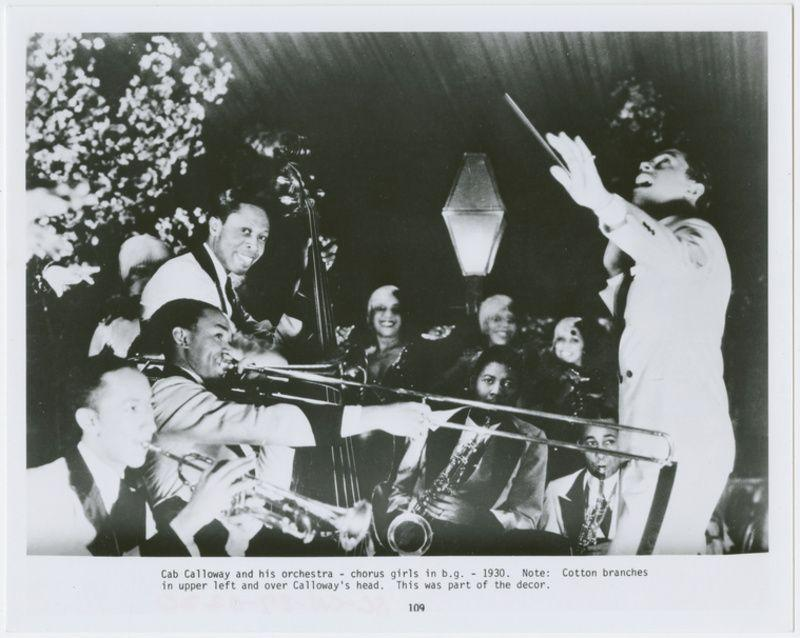
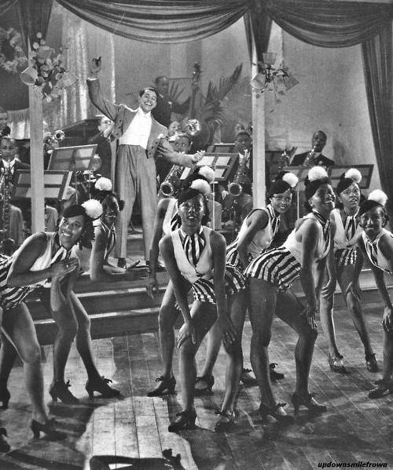
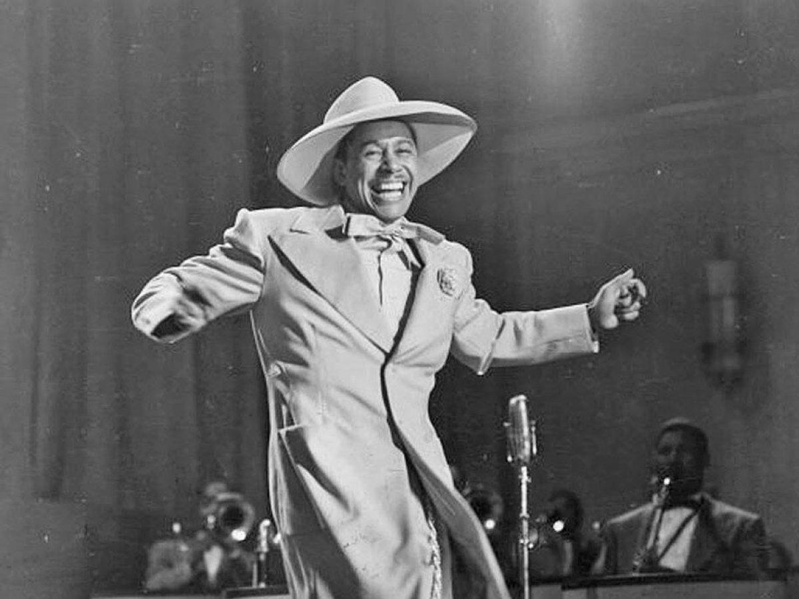
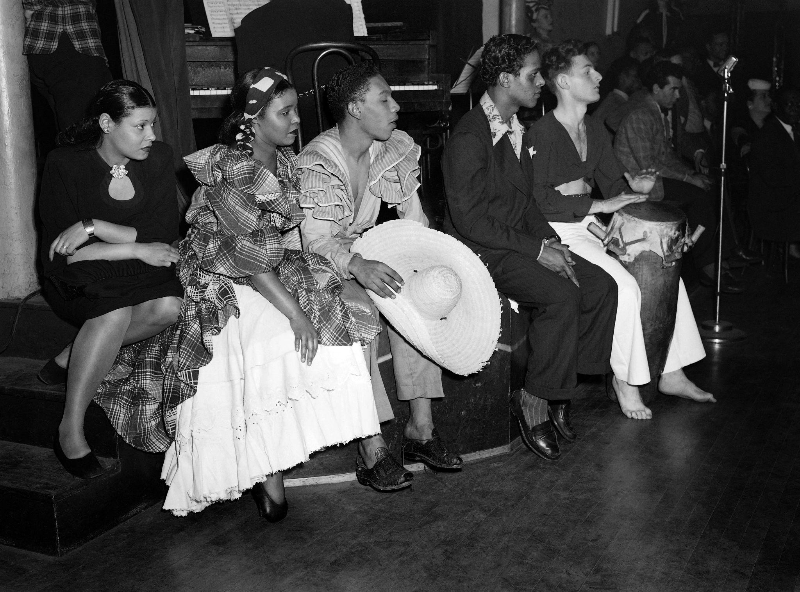
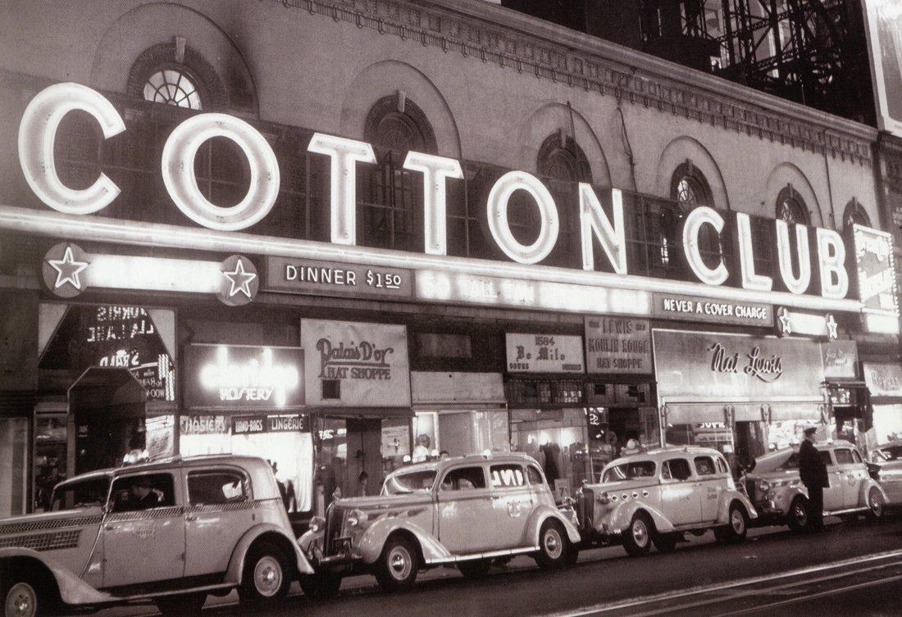
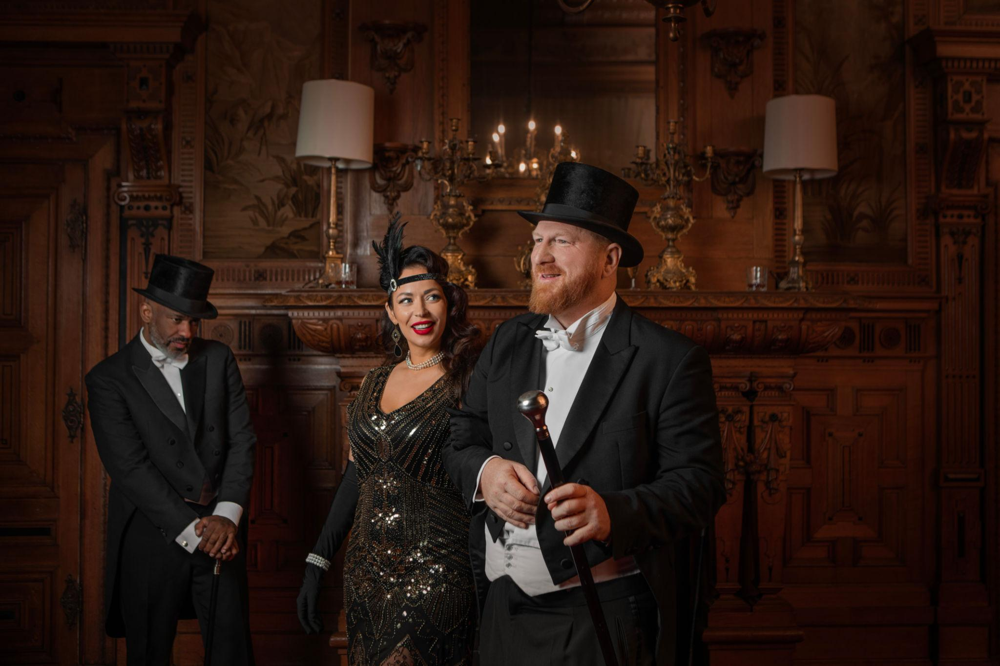
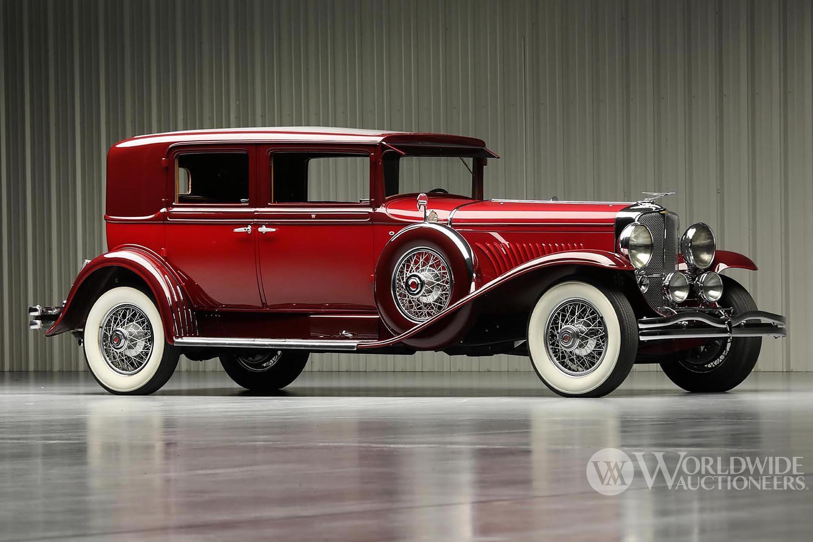
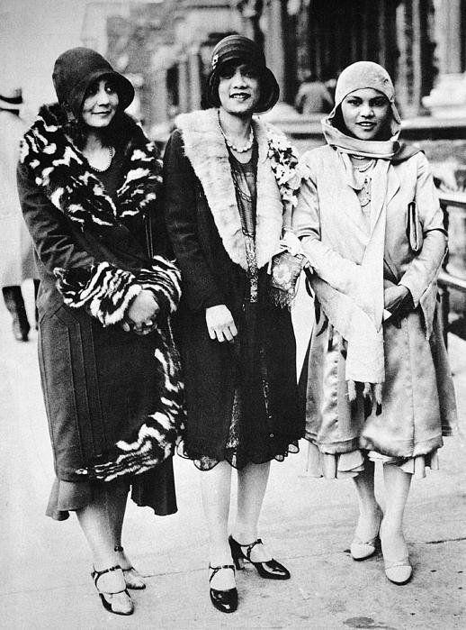
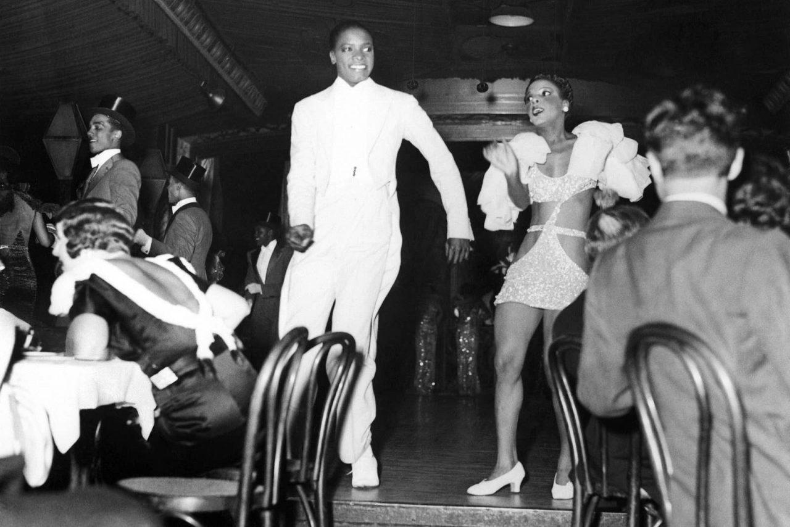
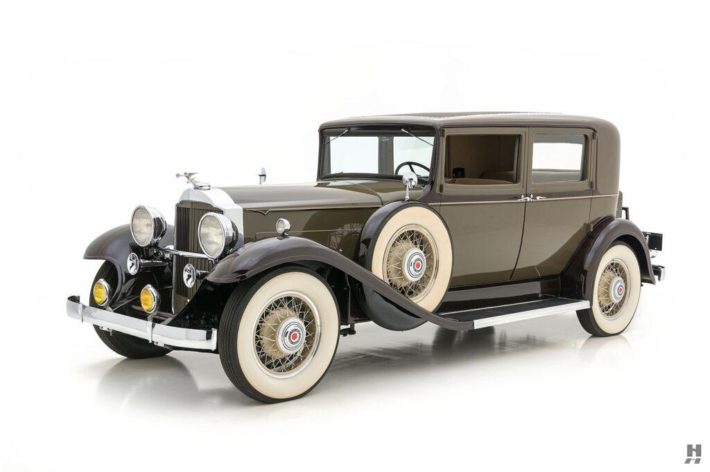

Harlem, early 1930s — in the audience at the Cotton Club
You’ve come uptown for the night—the way people do now. Not alone. Never alone. It’s meant to be shared, discussed later, proven.
Inside the Cotton Club, everything is arranged for you.
Small tables. Good sightlines. Waiters moving efficiently. The room glows just enough to flatter—never enough to reveal too much.
You notice, quickly and without comment:
Everyone at the tables looks like you.
The anticipation
The band is already in place, but the room is waiting.
There’s a hum—not loud, but collective. You hear fragments:
“He’s supposed to be extraordinary”
“You have to hear him live”
“It’s different up here”
You’re here for that difference.
The entrance
Then he’s there.
Cab Calloway doesn’t walk on—he arrives.
White suit catching the light, movements already in rhythm before the band fully locks in. He’s not just leading the music—he’s shaping the room.
The first call comes sharp:
“Hi-de-hi!”
It cuts clean through conversation.
For a split second, no one answers.
The shift
Then it clicks.
“Hi-de-ho!”
The response comes back uneven at first—too polite, slightly delayed. You feel it: the audience is learning the rhythm of participation.
Calloway pushes it again—bigger, faster, more insistent.
Now it lands.
The room answers together, louder, closer to his timing. Something has shifted:
You’re no longer just watching. You’re inside the structure of the performance.
What you’re actually experiencing
It feels spontaneous—but it isn’t.
He controls tempo, response, escalation
The band tightens behind him, amplifying the effect
The audience becomes part of the arrangement
You feel included—but also directed.
The underlying tension
You’re aware of something else, even if you don’t name it.
The energy you’re responding to—the voice, the rhythm, the movement—comes from a world you don’t live in.
But here, tonight, it’s presented for you:
Framed
Lit
Contained
You can participate without crossing certain lines.
And that’s what makes it possible.
The peak
He drives it higher—faster calls, sharper breaks.
Laughter now, real laughter. People leaning forward, responding before they’re ready, trying to keep up.
The room is unified—but only within the boundaries of the space.
What lingers
When the number ends, the applause is immediate, loud, relieved.
You sit back, slightly flushed, aware you’ve been pulled into something precise and controlled that felt—just for a moment—completely free.
And as the next set begins, you realize:
The performance isn’t just on the stage.
It includes you.
Harlem arrival & the room — what people wore, what they drove
You don’t just go to the Cotton Club—you arrive correctly.
The car matters almost as much as the table.
A long, low sedan pulls up—chauffeur stepping out first. Maybe a Duesenberg Model J if someone wants to be noticed, or a quieter Packard Eight for those who prefer understatement. Doors open smoothly. Coats are already being shrugged off before your feet hit the pavement.
Other cars idle behind you—engines low, polished bodies reflecting the club’s light. It’s a procession, not a queue.
The men
Inside, the room reads status instantly.
Black tie: tuxedo, satin lapels catching the light
Starched white shirt, stiff collar
Bow tie—precise, not decorative
Hair slicked back, shoes polished to a mirror
Nothing is loud. The signal is control.
A man who gets it right disappears into the room.A man who gets it wrong is immediately visible.
The women
The women are where the room moves.
Bias-cut evening gowns—silk or satin, close to the body
Fabrics that shift with light, not structure
Bare arms, low backs, long lines
Accessories do the rest:
Long gloves, sometimes removed slowly at the table
Cigarette holders—part prop, part rhythm
Fur stoles for arrival, set aside once inside
Hair is short, styled close to the head. Jewelry catches the light when they turn, not when they sit still.
Nothing is accidental. The clothing is designed to animate under electric light.
The effect of the room on the clothes
Electric lighting changes everything.
Under these lights:
Black becomes deeper
White sharper
Skin warmer than it is
Mirrors multiply movement—one gesture becomes several. A turn of the head, a lifted glass, a shift in posture—all amplified.
You’re not just dressed—you’re staged.
Movement through the space
Clothing dictates behavior.
Men remain composed, contained
Women create motion—fabric trailing, catching, releasing
When Cab Calloway starts the call—
“Hi-de-hi!”
—you feel the room respond not just in sound, but in movement:
Shoulders loosen
Heads turn faster
Fabric starts to follow rhythm
The elegance doesn’t disappear. It adjusts.
What you notice if you’re paying attention
Everything is curated:
The cars outside → signal arrival
The clothes → signal belonging
The room → reinforces both
But the energy on stage doesn’t come from that world.
And that creates a subtle friction:
The audience is dressed for control.The performance is built on release.
The feeling to carry forward
By the time you’re seated, drink in hand, you understand the unspoken rule:
You are here to experience something—but not to fully become part of it.
The clothes help maintain that line.
If you want, I can extend this into a continuous sequence: car → entrance → table → first drink → Calloway’s opening number, all stitched into one flowing scene.